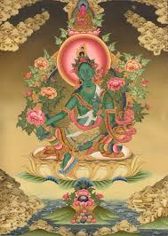

Зеленая Тара в переводе с санскрита означает «Спасительница», «быстрая освободительница». В тибетскомбуддизме она бодхисатва в женском обличие, которая достигла совершенства и освобождения, но отказалась от ухода в нирвану из сострадания ко всем живым существам. Считается, что Зеленая Тара появилась из слезинки правого глаза Бодхисаттвы Арьябалы. Зеленую Тару называют Матерью Тарой, ее просят почти обо всем, так как она воплощает себе сострадательность и внимание ко всем живым существам, вне зависимости от силы их практики она им внимает. Зеленый цвет ее тела указывает на то, что она из семейства Будды Амогасиддхи. В руках она держит цветы голубого лотоса. Слегка спущенная вперед правая нога символизирует готовность её мгновенно прийти любому позвавшему на помощь. Левая нога находится в состоянии покоя, символизируя выход из миров сансары.
Большая часть буддистов-мирян более интересуют «житейские» виды пользы от практики Тары, которые так сильно популярны в Непале, Индии, Тибете или Монголии по сей день .
Тара - это вневременная, внепричинная и внеличностная мудрость о природе всего доступного и недоступного сознанию. Все Будды появляются в действительности из этой Пустоты, ибо их сущность Абсолютный Гуру. Многое в Едином, Единое через многое.
Мантра: ОМ ТАРЕ ТУТТАРЕ ТУРЕ СВАХА